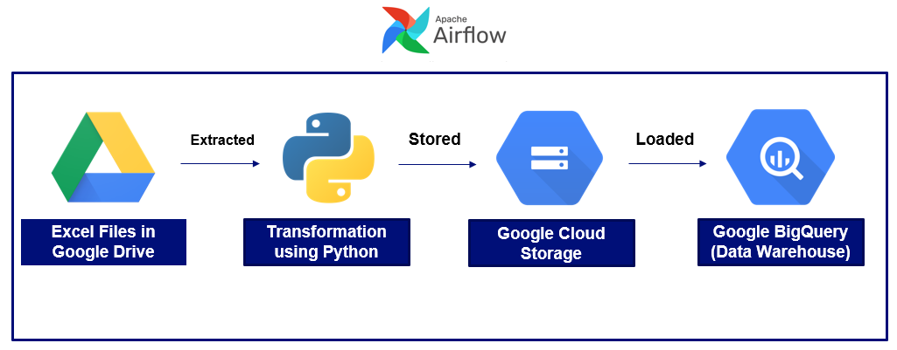
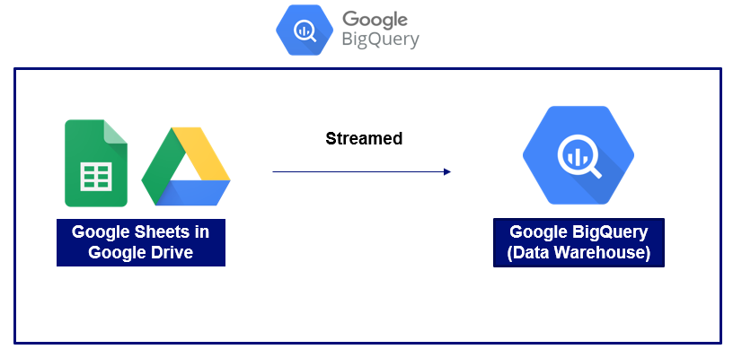

Data Files Transfer
The data files transfer are done using Airflow in Google Cloud Composer. The first scenario is to transfer data from database to data warehouse (Google BigQuery). The connection of both database source and BigQuery has to be defined first in the connection list in Airflow. By creating a pipeline through DAG (Directed Acyclic Graph) in Airflow, the automation of data file transfer can be made.

The image above shows that the extracted query result from the database are stored into the Google Cloud Storage (GCS) temporarily. Then the stored data are loaded into the desired datamart in the BigQuery. The scheduler is configured to control the frequency of data transfer.
The next scenario is transfering the flat files (mostly excel files) from Google Drive to BigQuery. In this case, the service account that has permission to particular Google Drive is utilized to download the files.
After extracting the files, there are some transformations applied in order to comply with BigQuery table format before the data is stored in GCS. Similarly, the stored data are loaded into the desired datamart in the BigQuery.
The last scenario is transfering the Google Sheets files in Google Drive by streaming directly using BigQuery external table feature.
Since the streamed external table could not be altered, hence it may be required to do another query to cleanse or modify the table and stored it into another table or view.